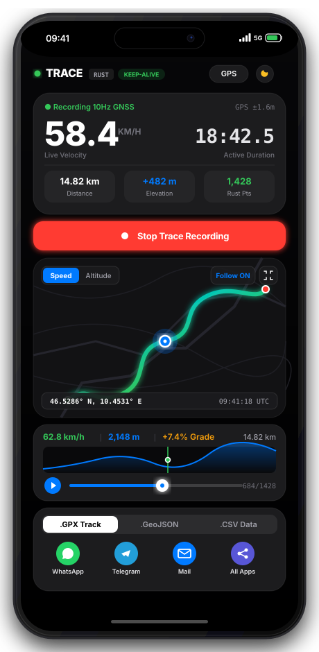

Precision GPS Telemetry for High-Velocity Tracking.
Sub-meter geodesy, dynamic speed and elevation gradient scrubbers, 60fps vector replay, and instant GPX / GeoJSON export. Zero accounts, zero ads, zero telemetry leakage.

Engineered for Every Terrain.
From racetrack apex telemetry to off-grid alpine climbs, TRACE logs every coordinate and velocity with sub-meter mathematical precision.
Track Days & Motorsports
10Hz high-frequency blackbox recording. Capture cornering velocity, apex braking points, acceleration G-forces, and split sector times with zero lag.
10Hz Sampling • Speed CurvesAlpine Cycling & Climbs
Real-time slope grade %, elevation gain accumulation, and synchronized altitude sparklines. Export GPX 1.1 with speed/grade extensions directly into Strava.
+Grade Math • Strava GPXOverlanding & Road Trips
100% offline blackbox recording. Never loses a waypoint through tunnels, canyons, or remote wilderness with screen-off AudioContext & WakeLock keep-alive.
100% Offline • Screen-Off WakeGIS Surveying & Field Data
Standard RFC 7946 GeoJSON LineStrings and RFC 4180 CSV tables with sub-meter timestamps. Zero cloud leaks; ready for immediate import into QGIS or ArcGIS.
GeoJSON & CSV • QGIS ReadyPure Rust Telemetry Engine
Calculates sub-meter spherical distances using high-precision Haversine trigonometry ($R = 6,371.0\text{ km}$). Performs velocity smoothing, elevation accumulation, and slope grade limits in thread-safe memory.
60fps Vector Replay
Powered by MapLibre GL and OpenFreeMap vector tiles. Replay your routes with dynamic velocity hue gradients (cyan to red) and synchronized location beacons without API keys or tracking cookies.
Android FileProvider Intent
Direct bridge to WhatsApp, Telegram, Mail, and Android's native system chooser. Share generated .gpx, .geojson, or .csv files directly with any installed app on your smartphone with one tap.
Get TRACE for Android
Download the latest signed APK from GitHub Releases. Aligned with 4-byte boundary and signed with Android v1, v2, and v3 signature schemes.